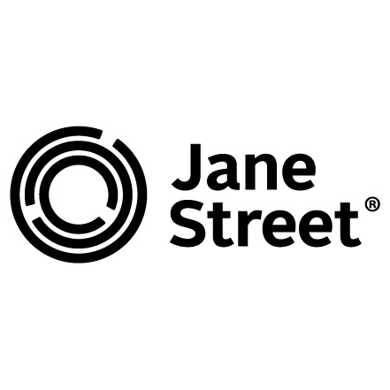

贊助廠商 - Jane Street
Jane Street 創立於2000年，是一家以提供流動性為目的，量化技術為基礎的全球領先金融證券產品做市商。 Jane Street 非常注重公司文化與團隊精神，全力打造開放有趣的工作環境。員工每天可以穿T恤牛仔褲上班，享用辦公室裡吃不盡的零食和飲料以及廚房精心烹飪的各國美食。辦公室自帶健身房、圖書室、撞球和桌球等設施，做到真正寓工作於娛樂。
簡單來說他們是一間很大的金融公司，並且對數奧出身的選手非常有興趣。自前年引進 IMOC 的 estimathon 也是來自小編去 IMO 時 Jane Street 辦的活動！很多前數奧國手上大學後都想去 Jane Street 實習，這次剛好有這個機會可以和 Jane Street 合作，大家可以趁這機會了解一下數奧國手可能的出路～
